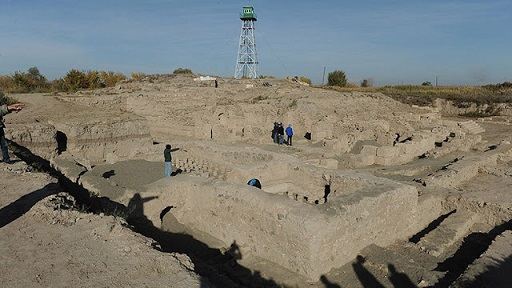

|
A R M E N I A
Tras las campañas de Pompeyo el Magno en
Asia, Armenia se convirtió en un protectorado de Roma haciendo de
frontera ante el empuje de los partos. En el 114 d.C. el emperador
Trajano incorporó Armenia a las fronteras imperiales, formando la nueva
provincia de Armenia.
-
En la localidad de Garni destaca el templo heleno y unas termas del
siglo III.
- Acueducto y varios
edificios del palacio real desenterrados en la legendaria capital de
Artashat, fundada por el Rey Artashes.
Foto: Hellene Travel.
En enero de 2020, arqueólogos de Armenia y Alemania han hallado restos
de un acueducto romano en la antigua ciudad de Artashat construido
presumiblemente entre los años 114 y 117, obra única de su tipo en este
país.

|